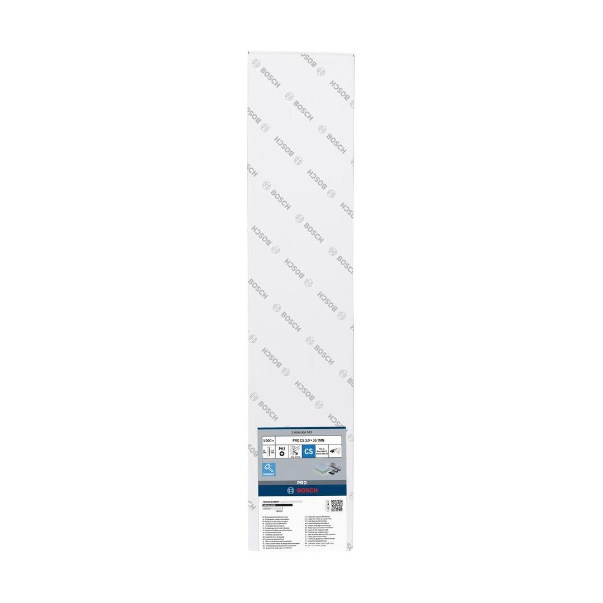
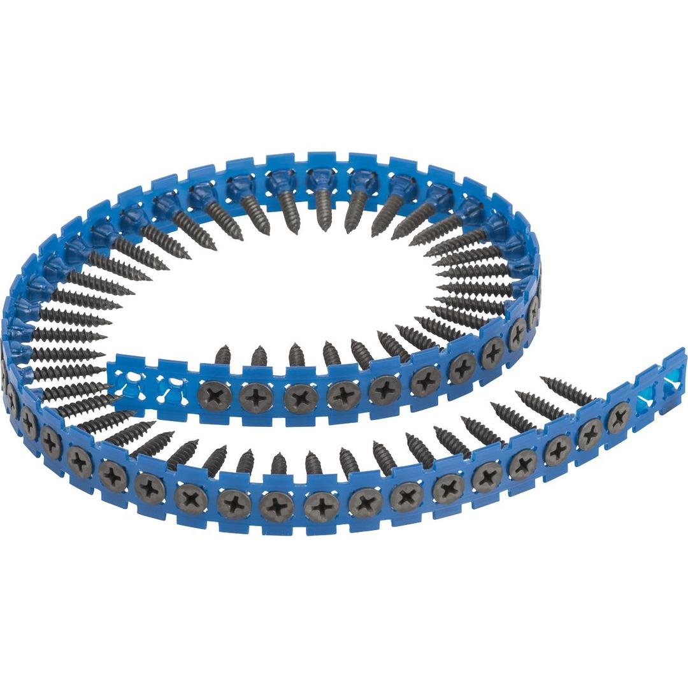

2608000552


| Suitable for |
GSR 6-25 TE; GSR 6-45 TE; GSR 18.0 V-EC TE; GTB 12V-11; GTB 185-LI; GTB 650; MA 55 Professional |
| Packaging type |
Paper / Cardboard / Corrugated board - Packaging, carton, with Euro hole |
| Pack quantity |
1000 Pcs |
| Minimum order quantity |
1 Pcs |